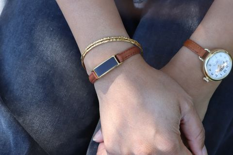
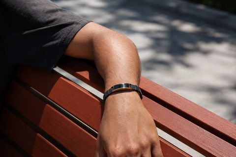
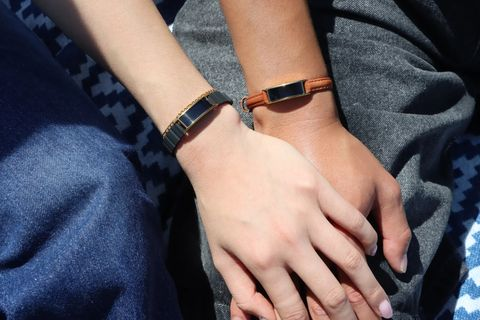
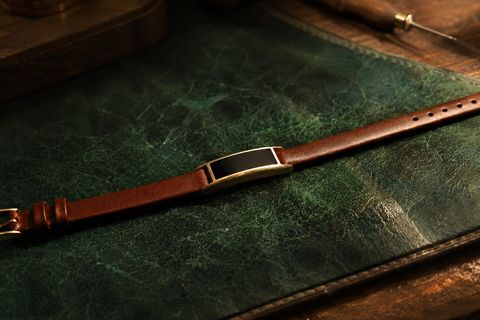
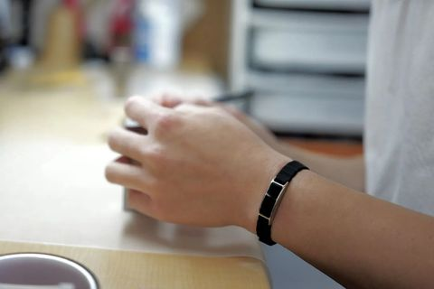

Health tracker guides
Find a comfortable tracker, compare your options and learn how Ray stays powered.

Screenless Fitness Trackers: What You Gain by Losing the ScreenTrack your sleep and activity without another screen lighting up your wrist. Lightweight Fitness Trackers: Why Weight Matters Beyond the GymA lighter tracker can feel more comfortable when you run, dance or sleep.
Lightweight Fitness Trackers: Why Weight Matters Beyond the GymA lighter tracker can feel more comfortable when you run, dance or sleep. Tired of Charging Your Fitness Tracker? Meet Light-Powered RayTaking your tracker off to charge is easy. Remembering to put it back on is the hard part.
Tired of Charging Your Fitness Tracker? Meet Light-Powered RayTaking your tracker off to charge is easy. Remembering to put it back on is the hard part.- Fitness Trackers for Small Wrists: Less Bulk, a Better FitFor a small wrist, case size matters as much as strap size.
 Oura for Your Wrist? A Screenless Alternative to Smart RingsLike the idea of Oura but not the ring? Ray is a screenless wrist alternative, made by Chargerless, not Oura.
Oura for Your Wrist? A Screenless Alternative to Smart RingsLike the idea of Oura but not the ring? Ray is a screenless wrist alternative, made by Chargerless, not Oura.
Does Solar Charging Work Indoors? Ray’s Sun, Shade and Window TestsBright daylight beside a window can charge Ray. Ordinary room lighting is not enough.- Screenless Fitness Trackers for Digital MinimalistsSleep and activity data, without another screen to check.
 Best Fitness Tracker for Travel: The Case for Leaving the Charger BehindEveryday health tracking without packing another charging cable.
Best Fitness Tracker for Travel: The Case for Leaving the Charger BehindEveryday health tracking without packing another charging cable.
Smart Ring vs Fitness Band: What Changes When You Wear One Every Day?A smart ring keeps your wrists free. A fitness band keeps your fingers free. Best Fitness Tracker for Low-EMF Buyers: More Control, Less Wireless ActivityA tracker’s EMF comes mostly from its Bluetooth time, its power draw and how it charges.
Best Fitness Tracker for Low-EMF Buyers: More Control, Less Wireless ActivityA tracker’s EMF comes mostly from its Bluetooth time, its power draw and how it charges.
Low-EMF Fitness Trackers: What Bluetooth-Off Actually MeansA Bluetooth-off option gives you control over a tracker’s wireless connection. Best Fitness Tracker for Seniors: Less Charging, Less FussEveryday health tracking with fewer charging chores.
Best Fitness Tracker for Seniors: Less Charging, Less FussEveryday health tracking with fewer charging chores.- Stylish Fitness Trackers That Don’t Look BulkyThe easiest tracker to style is one that does not take over your wrist.
- A Fitness Tracker for Women Who Don’t Want a Bulky WatchIf a bulky watch has kept you from wearing a tracker, look at the case and band together.
 Sleep Trackers for Side Sleepers: Less Bulk in BedIf you sleep with an arm under your pillow, a bulky watch can press into your wrist.
Sleep Trackers for Side Sleepers: Less Bulk in BedIf you sleep with an arm under your pillow, a bulky watch can press into your wrist. Can a Solar Fitness Tracker Get Through Winter? Start With Your SleevesA solar tracker can still collect energy in winter, as long as your sleeve isn’t covering it.
Can a Solar Fitness Tracker Get Through Winter? Start With Your SleevesA solar tracker can still collect energy in winter, as long as your sleeve isn’t covering it.- How Tight Should a Fitness Tracker Be? Secure Shouldn’t Mean SqueezingSecure enough to stay in contact with your skin, without squeezing.
- Fitness Trackers for Climbers: Keep Your Fingers FreeWant everyday health data without a ring on your fingers? A wrist tracker keeps them free.
- Fitness Trackers for Sensory Sensitivity: Comfort Comes FirstWhen a watch feels distracting on your skin, start with what bothers you, not the feature list.
- Fitness Trackers for Dancers: Less Bulk on the Dance FloorA tracker that feels fine on a treadmill can get in the way during a turn.

Fitness Trackers for Musicians: Keep Your Wrists Free to PlayA sliding case or bulky clasp can be more noticeable than the tracker itself.- Fitness Trackers for Typing: When the Clasp Hits the DeskA tracker can feel comfortable on a walk and irritating at a keyboard.
- Fitness Trackers for Camping: One Less Battery to Plan AroundDaytime activity, a night in the tent and one less charging cable to pack.
- Can You Turn Off Bluetooth on a Fitness Tracker? Here’s How Ray WorksYes. Ray lets you turn off Bluetooth on the tracker and sync on demand.
 A Fitness Tracker That Isn’t Bulky: What to Look ForA non-bulky tracker fits your wrist, clears your sleeves and stays put without a tight strap.
A Fitness Tracker That Isn’t Bulky: What to Look ForA non-bulky tracker fits your wrist, clears your sleeves and stays put without a tight strap.- Fitness Trackers for Walking: Count Steps Without Another ScreenYour daily walk can add to your activity record and give your tracker some daylight at the same time.
- Fitness Trackers for Hiking: Less Weight, Less ChargingTrack your day on the trail and your night afterward, with one less charging cable in your pack.
- Does Ray Track Yoga? Current Activity SupportNo yoga tracking yet. Activity features are in development.
Still weighing fitness trackers? Read what to look for in a tracker you'll want to wear every day.